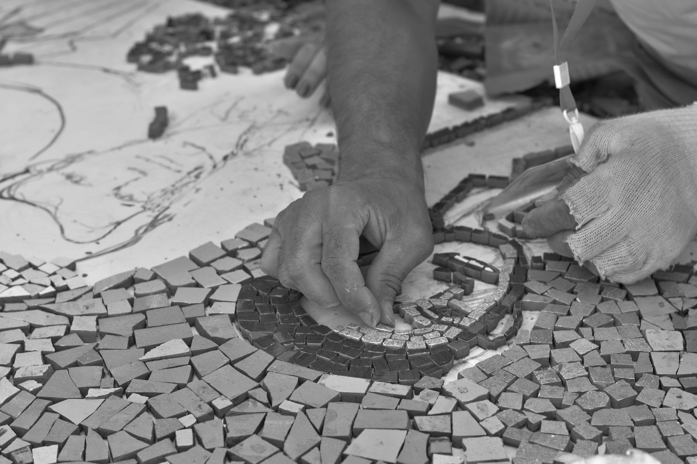
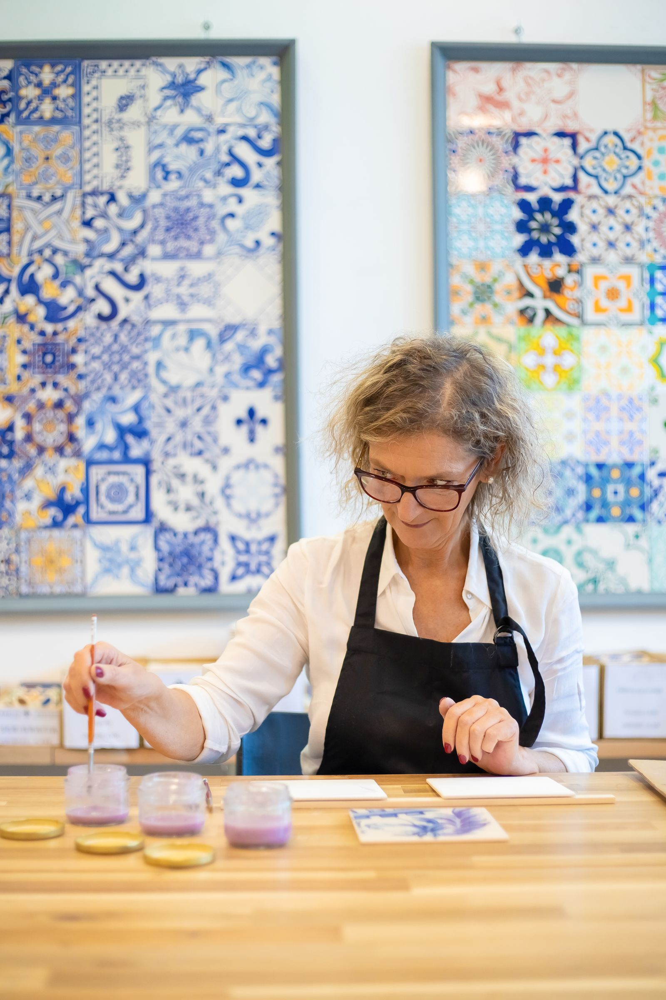
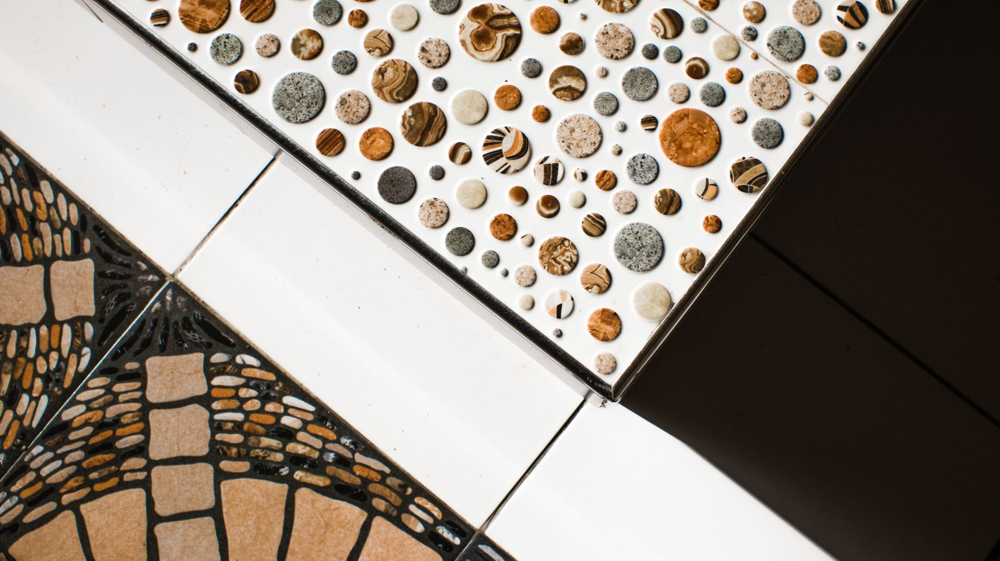

Setting at 10 mm — the slow workAbout
Ten years of small pieces
I came to mosaic through repair. I trained in tile restoration in Lisbon, in a city that has been gluing patterned ceramic to its walls since the azulejo centuries, and spent my first working years re-setting loosened tiles on Alfama facades — learning, one square at a time, exactly how a wall fails and how it holds.
In 2014 and 2015 I spent two seasons in Ravenna, Italy, learning to cut Venetian smalti with the hammer and hardie the way it has been done there for fifteen centuries. I set my first full mosaic — a bakery floor in Graça — in 2016. Since then: 41 commissions, 612 m², hotels, guesthouses, one swimming pool, one pizza oven, and a gable wall in Graça that half of Lisbon walked past on the night of Santo António in June 2026.
I work alone, except on walls too big for one pair of hands before a deadline, when my assistant Rita joins me. Everything is cut in the Alfama studio; nothing is ordered pre-cut, and I do not use printed mesh kits. If a design can be bought in a box, it is not the design your wall needs.
Method
How a piece is actually made
Andamento — the flow lines
Andamento is the word for the paths the tesserae follow, and it is the whole craft. Rows of small squares can lie flat and dead, or they can lean, curve and quicken the way water or a shoal of fish does. I draw the andamento full-size on the cartoon and pin it to your wall before cutting begins, because a flow line that looks right on paper can look wrong at four metres — and you should see it before it is permanent.
Substrates — what the mosaic sits on
Interior walls take a cement render or a fibre-cement board; floors take a screed checked for level and load — a stone mosaic at 25 mm weighs around 34 kg per square metre before grout, and a weak floor will tell you about it within a year. Pools get a waterproofed render and epoxy grout at the waterline. Panels, like The Beetle, are set on board so they can move house with you.
The grout opinion
Grout is not the gap between the tiles. Grout is the drawing — it is the line every eye actually follows. Choose its colour last, from a catalogue, under shop light, and you have designed half the picture by accident. I choose it on grout day, on the wall, in daylight, with three test patches, and I will argue — politely, and at length — for the darker one.

The Alfama studio
Ceramic stock, sorted by toneCare & credentials
Looking after a mosaic
- Indoors: dust with a dry cloth; wash rarely, with plain water. A mosaic’s enemy is not dirt, it is aggressive cleaning products eating the grout.
- Stone: re-seal every two to three years; I leave a labelled bottle of the exact sealant with every stone commission.
- Pools & exteriors: check the waterline grout each spring. One loose tessera replaced in April is a five-minute job; left a year, it is a patch.
- Repairs: I keep offcuts and the tally sheet for every commission, so a repair matches the original batch — write to the studio with your commission year.
Training & facts
- Tile restoration training, Lisbon; facade re-setting work in Alfama, 2012–2014.
- Two seasons cutting smalti in Ravenna, Italy, 2014–2015.
- Independent mosaic studio, Alfama, since 2016. Fully insured for public-wall installation; scaffold ticket held.
- Studio visits by appointment — come and hold the materials before you commit to a wall of them.